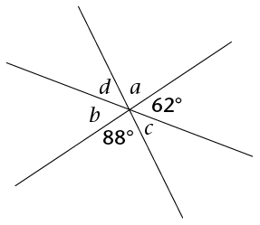
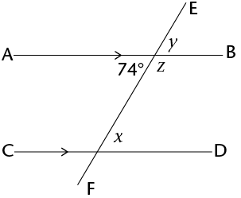

Meetkunde van reguit lyne
In hierdie hoofstuk gaan jy die verwantskappe ondersoek wat ontstaan wanneer reguit lyne bymekaarkom of mekaar sny. Jy gaan kyk na hoeke wat gevorm word deur loodregte lyne, deur enige twee lyne wat kruis, en deur ’n derde lyn wat twee ewewydige lyne kruis. Jy gaan leer van regoorstaande hoeke, ooreenkomstige hoeke, verwisselende hoeke en ko-binnehoeke. Jy sal ’n stel hoeke as sulks kan klassifiseer, en jy gaan jou kennis gebruik om onbekende hoeke in meetkundige figure te bereken.
Hoeke op ’n reguit lyn
Som van hoeke op ’n reguit lyn
In die figure hier onder is die hoeke genommer van 1 tot 5.
- Gebruik ’n gradeboog om die grootte
van al die hoeke in elke figuur te meet. Skryf jou
antwoord op die toepaslike plek op die figuur.
A

B

- Gebruik jou antwoorde om die hoekgroottes
hier onder in te vul.
- \( \hat{1} + \hat{2} = \text{______}^{\circ} \)
- \( \hat{3} + \hat{4} + \hat{5}= \text{______}^{\circ} \)
- \( \hat{1} + \hat{2} = \text{______}^{\circ} \)
Die som van die hoeke wat op ’n reguit lyn gevorm word is gelyk aan 180°. (afgekort: \(\angle\)e op reguit lyn).)
Twee hoeke wat optel na 180° byvoorbeeld 1 + 2 word ook supplementêre hoeke genoem.
Hoeke wat dieselfde hoekpunt en ’n gemeenskap-like sy het is aangrensend. So word \( \hat{1} + \hat{2}\) dus ook supplementêre aangrensende hoeke genoem.
Wanneer twee lyne loodreg op mekaar is, is die supplementêre aangrensende hoeke 90° elk.
In die skets langsaan is \(\hat{DCA}\) en \(\hat{DCB}\) aangrensend supplementêre hoeke, want hulle is langs mekaar (aangrensend), en hulle tel op na 180° (supplementêr).

Bereken onbekende hoeke op reguit lyne
Bereken die grootte van die onbekende hoeke hier onder. Stel in elke geval ’n gepaste vergelyking op om die meetkundeprobleme op te los. Onthou om altyd ’n rede te gee vir elke stelling wat jy maak.
- Bereken die waarde van
\(a\).

\( \begin{align} a + 63^{\circ} &= \text{______} [\angle\text{e op reguit lyn }] \\ a &= \text{______} - 63^{\circ} \\ &= \text{______} \end{align}\)
- Bereken die waarde van
\(x\).

- Bereken die waarde van
\(y\).

Bereken nog onbekende hoeke op reguit lyne
- Bereken:

- \(x\)
- \(\hat{ECB}\)
- \(x\)
- Bereken:

- \(m\)
- \(\hat{SQR}\)
- \(m\)
- Bereken:

- \(x\)
- \(\hat{HEF}\)
- \(x\)
- Bereken:

- \(k\)
- \(\hat{TYP}\)
- \(k\)
- Bereken:

- \(p\)
- \(\hat{JKR}\)
- \(p\)
Regoorstaande hoeke
Wat is regoorstaande hoeke?
- Gebruik ’n gradeboog om al die
hoeke in die figuur te meet.
Dui jou antwoorde op die figuur aan.

- Let op watter hoeke ewe groot is, en hoe daardie gelyke hoeke gevorm is.
Regoorstaande hoeke (regoorst. \(\angle\)e) is die hoeke wat regoor mekaar is wanneer twee lyne sny. Regoorstaande hoeke is altyd gelyk. .

Bereken onbekende hoeke
Bereken die onbekende hoeke in die volgende figure. Gee ’n rede vir elke stelling wat jy maak.
- Bereken
\(x,~
y\) en
\(z\).

\( \begin{align} x &= \text{______}^{\circ} &&[\text{regoorst.}\angle\text{e}] \\ \\ y + 105^{\circ} &= \text{______}^{\circ} &&[\angle\text{e op reguit lyn }] \\ y &= \text{______} - 105^{\circ} && \\ & = \text{______} \\ \\ z &= \text{______} &&[\text{regoorst.}\angle\text{e}] \end{align}\)
- Bereken
\(j,~
k\) en
\(l\).

- Bereken
\(a,~
b,~ c\) en
\(d\).

Vergelykings met regoorstaande hoeke
Regoorstaande hoeke is altyd gelyk. Ons kan hierdie eienskap gebruik om vergelykings op te stel, wat dan opgelos kan word om die waarde van ’n onbekende veranderlike te bereken.
- Bereken die waarde van
\(m\).
\( \begin{align} m + 20^{\circ} &= 100^{\circ} [\text{regoorst.}\angle\text{e}] \\ m &= 100^{\circ} - 20^{\circ} \\ &= \text{______} \end{align}\)
- Bereken die waarde van
\(t\).

- Bereken die waarde van
\(p\).

- Bereken die waarde van
\(z\).

- Bereken die waarde van
\(y\).
- Bereken die waarde van
\(r\).

Lyne wat gesny word deur ’n snylyn
Pare hoeke wat deur ân snylyn gevorm word
’n Snylyn is ’n lyn wat minstens twee ander lyne sny.

Wanneer ’n snylyn twee lyne sny, kan ’n mens die stelle hoeke wat op die twee lyne gevorm word vergelyk deur na hulle posisies te kyk.
Die hoeke wat aan dieselfde kant van die snylyn in ooreenstemmende posisies is, word ooreenkomstige hoeke s (ooreenk.\(\angle\)e) genoem. In die figuur is die pare ooreenkomstige hoeke:

- \(a\) en \(e\)
- \(b\) en \(f\)
- \( d\) en \(h\)
- \(c\) en \(g\)
- In die figuur is
,
\(a\) en
\(e\) albei links van die
snylyn en bokant ’n lyn.
Beskryf ook so die ligging van die orige pare ooreenkomstige hoeke. Die eerste een is vir jou gedoen.
\(b\) en \(f\): Regs van die snylyn en bokant ’n lyn
\(d\) en \(h\):
\(c\) en \(g\):
Verwisselende hoeke (verw.\(\angle\)e) lê aan weerskante van die snylyn, maar is nie aangrensend of regoorstaande nie. Wanneer die verwisselende hoeke tussen die twee lyne lê, word hulle verwisselende binnehoeke genoem. In die figuur is die pare verwisselende binnehoeke:
- \(d\) en \(f\)
- \(c\) en \(e\)
Wanneer die verwisselende hoeke buite die twee lyne lê, word hulle verwisselende buitehoeke genoem. In die figuur is die pare verwisselende buitehoeke:
- \(a\) en \(g\)
- \(b\) en \(h\)
-
Beskryf die ligging van die volgende pare verwisselende hoeke:
\(d\) en \(f\):
\(c\) en \(e\):
\(a\) en \(g\):
\(b\) en \(h\):
Ko-binnehoeke (ko-binne.\(\angle\)e) lê aan dieselfde kant van die snylyn en tussen die twee lyne. In die figuur is die pare ko-binnehoeke:

- \(c\) en \(f\)
- \(d\) en \(e\)
-
Beskryf die ligging van die volgende pare
ko-binnehoeke:
\(d\) en \(e\):
\(c\) en \(f\):
Identifiseer soorte hoeke
In die diagram hier onder word twee lyne deur ’n snylyn gesny.

Skryf die volgende pare hoeke neer:
- twee pare ooreenkomstige hoeke:
- twee pare verwisselende binnehoeke:
- twee pare verwisselende buitehoeke
:
- twee pare ko-binnehoeke:
- twee pare regoorstaande hoeke:
Ewewydige lyne wat gesny word deur ’n snylyn
Ondersoek hoekgroottes
In die figuur links onder is EF ’n snylyn deur AB en CD. In die figuur regs is PQ ’n snylyn deur die ewewydige lyne JK en LM.

- Gebruik ’n gradeboog om die groottes van al die hoeke in albei figure te meet. Dui jou antwoorde aan op die figure.
- Gebruik jou metings om die volgende tabel te
voltooi.
Hoekpaar
Lyne is nie ewewydig nie
Lyne is ewewydig
Ooreenk.\(\angle\)e
\( \hat{1} = \text{_______};~\hat{5} = \text{_______}\)
\( \hat{4} = \text{_______};~\hat{8} = \text{_______}\)
\( \hat{2} = \text{_______};~\hat{4} = \text{_______}\)
\( \hat{3} = \text{_______};~\hat{7} = \text{_______}\)
\( \hat{9} = \text{_______};~\hat{13} = \text{_______}\)
\( \hat{12} = \text{_______};~\hat{16} = \text{_______}\)
\( \hat{10} = \text{_______};~\hat{14} = \text{_______}\)
\( \hat{11} = \text{_______};~\hat{15} = \text{_______}\)
Verw. binne \(\angle\)e
\( \hat{4} = \text{_______};~\hat{6} = \text{_______}\)
\( \hat{3} = \text{_______};~\hat{5} = \text{_______}\)
\( \hat{12} = \text{_______};~\hat{14} = \text{_______}\)
\( \hat{11} = \text{_______};~\hat{13} = \text{_______}\)
Verw. buite.\(\angle\)s
\( \hat{1} = \text{_______};~\hat{7} = \text{_______}\)
\( \hat{2} = \text{_______};~\hat{8} = \text{_______}\)
\( \hat{9} = \text{_______};~\hat{15} = \text{_______}\)
\( \hat{10} = \text{_______};~\hat{16} = \text{_______}\)
Ko-binne.\(\angle\)s
\( \hat{4} + \hat{5} = \text{_______}\)
\( \hat{3} + \hat{6} = \text{_______}\)
\( \hat{12} + \hat{13} = \text{_______}\)
\( \hat{11} + \hat{14} = \text{_______}\)
- Kyk na jou voltooide tabel in vraag
2. Wat kom jy agter van die verskillende hoekpare
wanneer ’n snylyn ewewydige lyne sny?
Wanneer lyne ewewydig is, is:
- ooreenkomstige hoeke gelyk
- verwisselende binnehoeke gelyk
- verwisselende buitehoeke gelyk
- die som van ko-binnehoeke 180°
Bepaal onbekende hoeke by ewewydige lyne
- Vul die waardes van die gegewe hoeke se
ooreenkomstige hoeke in.

- Vul die waardes van die gegewe hoeke se
verwisselende buitehoeke in.

-
- Vul die waardes van die gegewe hoeke se verwisselende binnehoeke in.
- Omkring die twee pare ko-binnehoeke in elk van die figure.

-
- Sonder om te meet, vul al die hoeke hier onder in wat gelyk is aan \(x\) en \(y\).
- Verduidelik jou redes vir elke
\(x\)
en \(y\) wat jy ingevul het aan ’n klasmaat.

- Gee die waardes van
\(x\) en
\(y\) hier onder.

Bepaal onbekende hoeke op ewewydige lyne
Bepaal onbekende hoeke
Bepaal die groottes van die onbekende hoeke. Gee redes vir jou antwoorde. (Die eerste vraag is as voorbeeld gedoen.)
- Vind die groottes van
\(x,~y\) en \(z\).

\( \begin{align} x &= 74^{\circ} &&[\text{verw.}\angle\text{ met gegewe }74^{\circ}; AB \parallel CD] \\ \\ y &= 74^{\circ} &&[\text{ooreenk..}\angle\text{ met }x; AB \parallel CD] \\ \text{of } y &= 74^{\circ} &&[\text{regoorst .}\angle\text{ met gegewe }74^{\circ}] \\ \\ z &= 106^{\circ} &&[\text{ko-binne .}\angle\text{ met }x; AB \parallel CD] \\ \text{of } z &= 106^{\circ} &&[\angle\text{e op reguit lyn }] \end{align}\)
- Bereken die groottes van
\(p,~ q\) en \(r\).

- Bereken die groottes van
\(a,~b,~c\) en \(d\).

- Bereken die groottes van al
die
hoeke.

- Bereken die groottes van al
die
hoeke. (Kan jy twee snylyne en
twee stelle ewewydige lyne sien?)

Uitbreiding
Twee hoeke in die diagram word gegee as \(x\) en \(y\). Vul al die hoeke in wat gelyk is aan \(x\) of \(y\).

Som van die hoeke in ’n vierhoek
Hierdie diagram is ’n deel uit die diagram hier bo.

- Watter tipe vierhoek word hier gewys? Gee ’n
rede vir jou antwoord.
-
Kyk na die snypunt links bo. Voltooi die volgende vergelyking:
Hoeke om ’n punt \( = 360^{\circ}\)
\(\therefore x + y+ \text{______} + \text{______} = 360^{\circ}\)
-
Kyk na die binnehoeke van die vierhoek. Voltooi die volgende
vergelykings:
Som van die hoeke in die vierhoek \(= x + y + \text{______} + \text{______}\)
Van vraag 2: \(x + y+ \text{______} + \text{______} = 360^{\circ}\)
\(\therefore\) Som van die hoeke in die vierhoek = \(\text{______}^{\circ}\)
Kan jy aan nog ’n manier dink waarop die diagram gebruik kan word om die som van die hoeke van ’n vierhoek uit te werk??
Los meer meetkundige probleme op
Hoekverwantskappe op ewewydige lyne
- Bepaal die groottes van
\(\hat{1}\) tot \(\hat{7}\).

- Bepaal die groottes van
\(x,~y\) en
\(z\).

- Bepaal die groottes van
\(a, ~b, ~c\) en
\(d\).

- Bepaal die groottes van
\(x\).

- Bepaal die groottes van
\(x\).

-
Bepaal die groottes van
\(x\).

- Bepaal die groottes van
\(a\) en
\(C\hat{E}P\).

Hoekverwantskappe en die eienskappe van drie- en vierhoeke
- Bepaal die groottes van
\(\hat{1}\) tot \(\hat{6}\).

- RSTU is ’n trapesium.
Bepaal die groottes van
\(\hat{T}\) en \(\hat{R}\).

- JKLM is ’n ruit. Bereken die
groottes van
\(J\hat{M}L, \hat{M_2}\) en \(\hat{K_1}\).

- ABCD is ’n parallelogram. Bereken
die groottes van
\(A\hat{D}B, A\hat{B}D, \hat{C}\) en \(D\hat{B}C\)

- Kyk na die figuur hier onder. Identifiseer die
hoeke wat langsaan beskryf word.

- ’n paar regoorstaande hoeke
- ’n paar ooreenkomstige hoeke
- ’n paar verwisselende binnehoeke
- ’n paar ko-binnehoeke
- ’n paar regoorstaande hoeke
- In die diagram is
AB \(\parallel\) CD. Bereken die groottes van
\(F\hat{H}G, \hat{F}, \hat{C}\)
en \(\hat{D}\). Gee redes vir
jou antwoorde.
- In die diagram is OK = ON,
KN \(\parallel\) LM,
KL\(\parallel\) MN en \(\hat{LKO} = 160^{\circ}\).
Bereken die waarde van \(x\). Gee redes vir jou antwoorde.